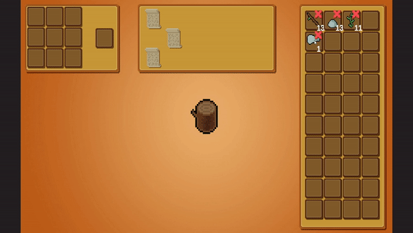
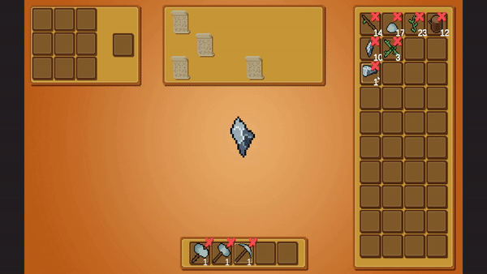

Back to Home Page
Idle Crafter
Idle Crafter was a two week experiment to teach me how to maintain scope when working on a project. Inspired by other crafting mechanics like Minecraft and Terraria, I sought to create a project that incorperated crafting mechanics while still being small enough to complete within my time frame.
Check out the source code for the project on GitHub
Continually break the respawning resources to collect new items to craft with

Create tools to break the resources faster and unlock more resources throughout the game
Upgrade your tools, and see all of the unique items you can find!
